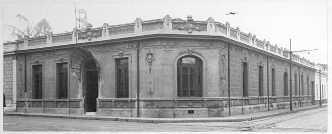

| Patas y Platos |
|---|---|
| Empresa cradora y distrubuidora de Comedoros para mascotas |
|
| Patas y Platos |
|---|---|
| Empresa cradora y distrubuidora de Comedoros para mascotas |
| ¿Quienes Somos? | |
|---|---|
| Somos una pequeña PYME que se centra en el mercado de la venta de productos dirigodos a dueños con mascotas todo esto en base a la alimentacion de estas mismas. Ademas ofrecemos consejos sobre el cuidado en la alimentacion y cosas en generales las mascotas |
|
 Pintor Austriaco |
Nuestra empresa se remonta en 1942 Cuando nuestra fundador viendo a pobres animales comiendo en el piso se realizo una pregunta muy seria, de que tan malo es que los animales coman en el suelo. Por ello realizo una investiagacion exaustiva hasta que encontro el resultado contundente |
| En base a eso fundo la empresa en 1944, ©Patas y Platos dando nuestro primer local. donde se ubicaba en La Pampa |  |